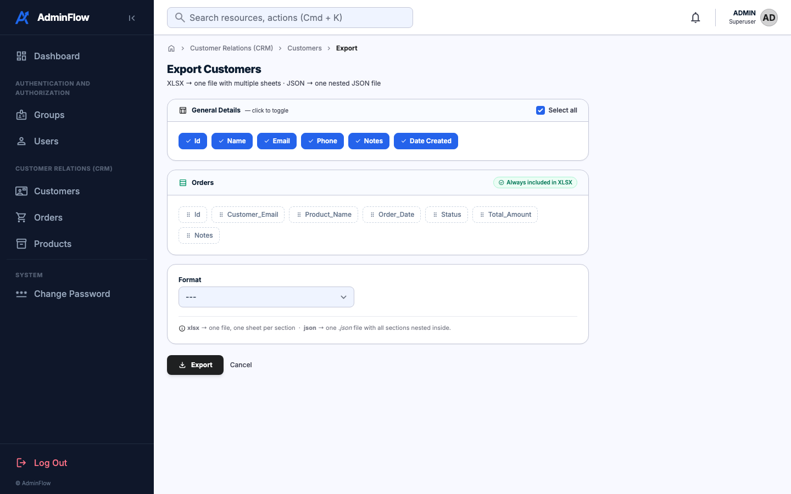
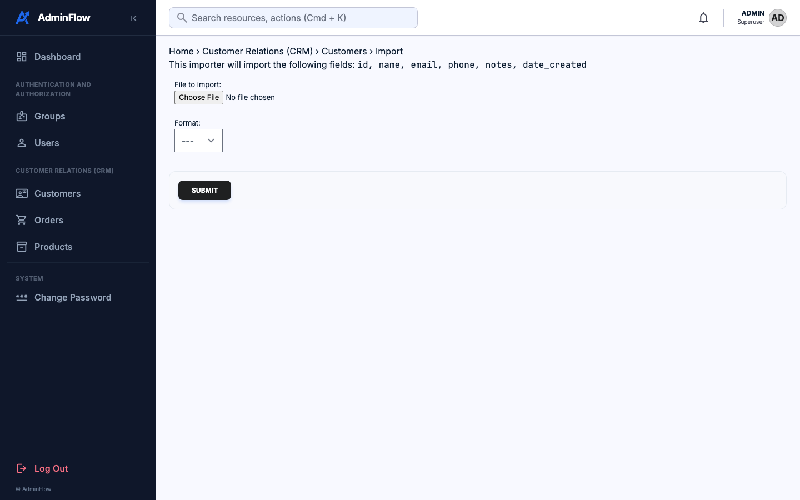

Import / Export
AdminFlow extends django-import-export with
MultiSheetExportImportMixin — a mixin that lets you export multiple related models into
one XLSX file (each model on its own sheet) or one nested JSON file
(child records embedded inside their parent).
Requirements
pip install "django-adminflow[import-export]"
Add import_export to INSTALLED_APPS:
INSTALLED_APPS = [
"adminflow",
"django.contrib.admin",
...
"import_export", # ← add this
]
Export Formats
Format |
Output |
|---|---|
xlsx |
One |
json |
One |

Setting Up Resources
Define resources using django-import-export’s standard ModelResource class:
# resources.py
from import_export import resources, fields
from import_export.widgets import ForeignKeyWidget
from .models import Customer, Order
class CustomerResource(resources.ModelResource):
class Meta:
model = Customer
fields = ('id', 'name', 'email', 'phone', 'notes', 'date_created')
export_order = ('id', 'name', 'email', 'phone', 'notes', 'date_created')
class OrderResource(resources.ModelResource):
# Use email as the FK reference field so the exported file is human-readable
customer = fields.Field(
column_name='customer_email',
attribute='customer',
widget=ForeignKeyWidget(Customer, field='email'),
)
class Meta:
model = Order
fields = ('id', 'customer', 'product', 'order_date', 'status', 'total_amount')
Enabling Multi-Sheet Export
Use MultiSheetExportImportMixin in your admin class:
# admin.py
from django.contrib import admin
from import_export.admin import ImportExportModelAdmin
from adminflow.import_export import MultiSheetExportImportMixin
from .models import Customer, Order
from .resources import CustomerResource, OrderResource
@admin.register(Customer)
class CustomerAdmin(MultiSheetExportImportMixin, ImportExportModelAdmin, admin.ModelAdmin):
# combined_sheets drives both export layout and import sheet-matching
combined_sheets = [
# (sheet_title, ResourceClass, queryset_lambda_or_None)
('General Details', CustomerResource, None),
('Orders', OrderResource, lambda qs: Order.objects.filter(customer__in=qs)),
]
list_display = ('name', 'email', 'phone', 'date_created')
combined_sheets format:
(sheet_title, ResourceClass, queryset_lambda_or_None)
sheet_title— used as the Excel sheet name and the JSON section key.ResourceClass— aModelResourcethat controls which fields to include.queryset_lambda— receives the parent queryset and returns the related child queryset. PassNonefor the primary (parent) resource.
The Export Page
The export page has two sections:
- Primary fields (checkboxes)
Fields from the first entry in
combined_sheets. Check or uncheck to control which columns appear in the export.- Sub-sheet fields (read-only chips)
Fields from all remaining entries — always included automatically.
- Format selector
Choose
xlsx(multi-sheet) orjson(nested).
XLSX Output
Selecting xlsx produces a single .xlsx file where each entry in
combined_sheets becomes a separate worksheet:
customer_export.xlsx
├── Sheet: General Details (Customer fields)
└── Sheet: Orders (Order fields)
JSON Output
Selecting json produces a single .json file with child records nested
inside their parent:
[
{
"id": "1",
"name": "Alice Johnson",
"email": "alice@example.com",
"phone": "+1 (555) 123-4567",
"notes": "",
"date_created": "2026-07-22 01:34:49",
"orders": [
{
"id": "1",
"customer_email": "alice@example.com",
"product": "Mona Kelly",
"order_date": "2026-07-22",
"status": "delivered",
"total_amount": "42222.00"
}
]
}
]
The nest key is the sub-sheet title lowercased with spaces replaced by underscores
("Orders" → "orders").
The Import Page

Upload a multi-sheet .xlsx file that was previously exported by AdminFlow.
Each sheet is automatically matched to the corresponding resource by position in
combined_sheets and imported atomically.
Note
Single-sheet files (CSV, JSON, etc.) fall back to the default
django-import-export import behaviour.